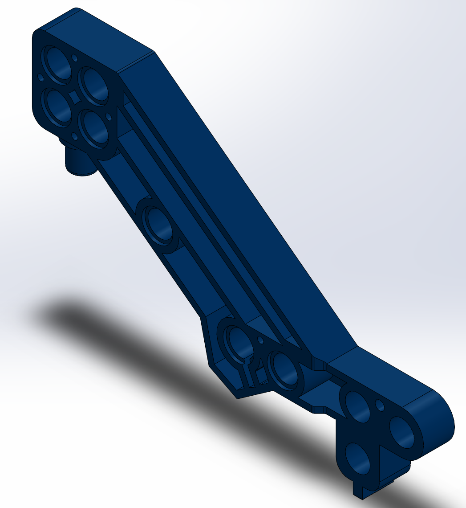
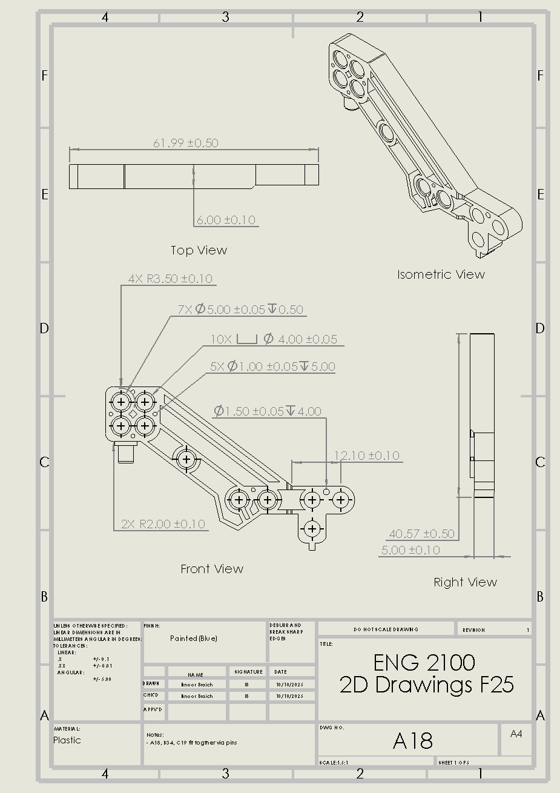
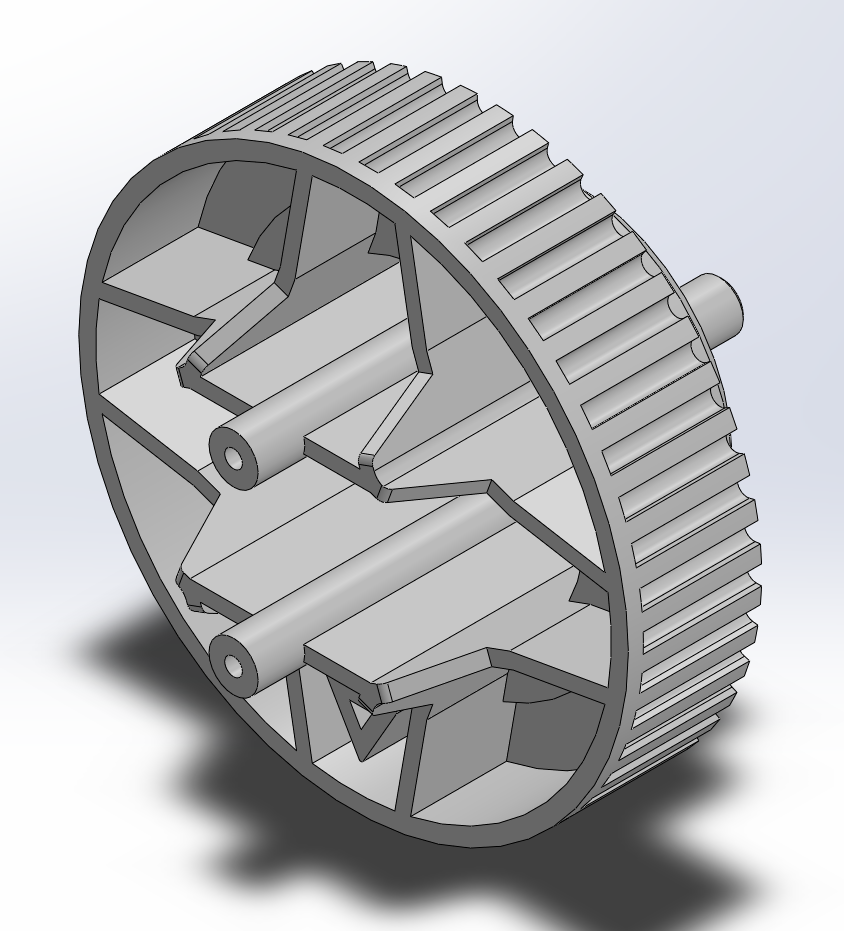
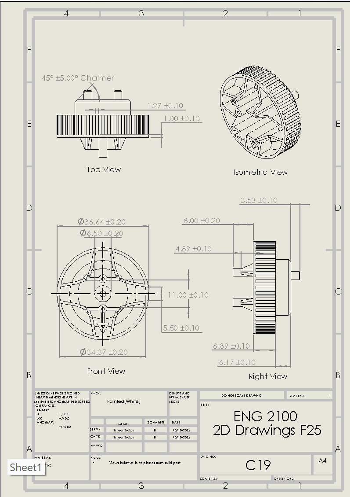

// PROJECT 04
Reverse Engineered Excavator Assembly
Goal
For Engineering & Design 2 project the goal was to build real experience with large-scale CAD assemblies by reverse engineering a Meccano excavator kit entirely in SolidWorks. That meant measuring every physical part by hand, modeling it and combining everything into one working assembly; then producing detailed engineering drawings precise enough that anyone could recreate the parts from scratch.
Process
I modeled 10 unique parts which came out to about 20 once mirrored and repeated components across the assembly were counted. Everything from structural frame pieces to the wheels, arm, and linkages that give the excavator its range of motion.
The hardest part about this project was the coordination. As with five people modeling different parts of the same machine, we needed a shared system for tolerancing so that parts modeled by different people would fit together correctly once combined. Modeling the hydraulic actuation for the boom, arm, and bucket added another layer to this since those linkages needed to move correctly relative to each other, not just look right sitting still.
Where this project differed from some of my other work was that it went smoothly. We laid out the whole assembly plan and tolerancing approach as a team before anyone started modeling, and that upfront collaboration paid off, when we combined everyone's parts into the final assembly, there was no interference anywhere. From there we set up a full motion study animating each piece the way the real excavator does/should and finished by producing detailed engineering drawings for every part.




Outcome
The final assembly came together cleanly with zero interference between parts. This can largely be attributed to the planning we did upfront rather than fixing problems after the fact. The project earned our team 100%, and it taught me more about tolerancing, large assembly management and technical drawing than any single-person project could have. It's also a good reminder that not every lesson comes from something going wrong; instead the lesson is in a process that actually works and understanding why it worked.